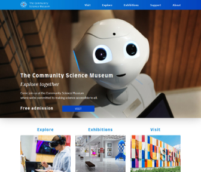

My Projects

Pawtalk - Project Exam 1
A Dog blog themed site created with HTML, CSS, JavaScript and WordPress Headless REST API. With JavaScript Form validation, WordPress REST API GET and POST request functionality.

Square Eyes - HTML and CSS assignment
Independent film streaming website. Created with HTML and CSS in the beginning. Improved over several courses with focus on JavaScript, Interaction Design and WordPress Headless API.

The Community Science Museum - Semester Project 1
A website for a local Science Museum. Target audience is primary and middle school children (7-15) and families with young children. Created only with HTML and CSS.